A critical-reflective serious game about cognitive bias. Unity · 2026 · Coming to Steam一款关于认知偏差的批判性严肃游戏。Unity · 2026 · 筹备上架 Steam
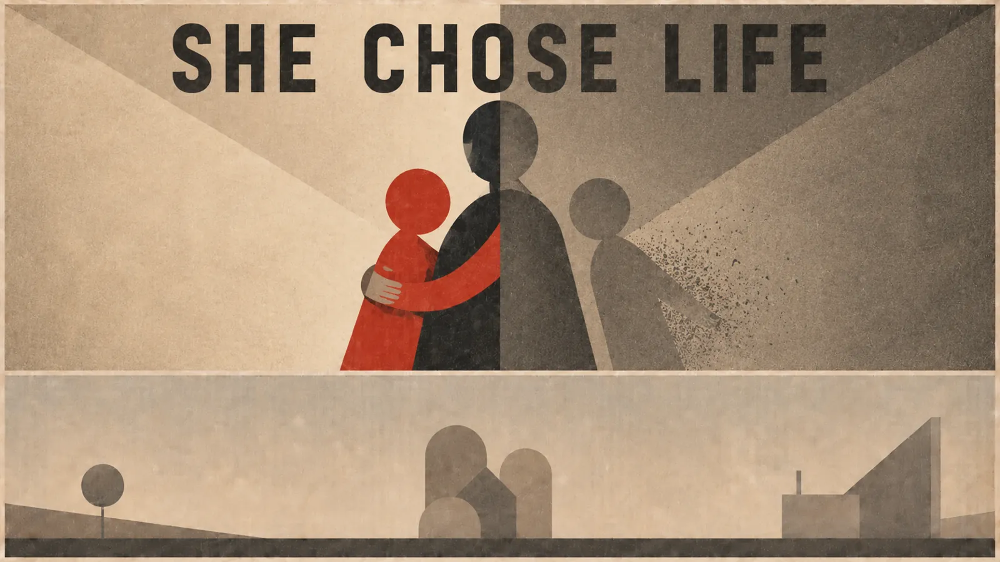
Built for the brief “Simulation for cognitive bias training”, Until They Forget does not teach the player to correct a bias. It places them inside the pleasure of committing one. Across six acts and a finale, the player listens to the grieving survivors of one family and compresses each of the dead into a propaganda god made of just two traits, which the same crowd then worships and tears down.
The Cognitive Bias Codex as structure. Its four quadrants map one-to-one onto the four steps of the central ritual: overhear, assemble, choose two, enshrine.把认知偏差图谱当作结构，而不是内容。四个象限一一对应核心仪式的四步：偷听、拼凑、二选、封神。
Authored convergence. Every pair of traits resolves to one of at most three pre-written gods, so the choice is real while the argument stays controlled.编排式收敛。任意两个特质的组合都收敛到最多三尊预写好的神之一：选择是真的，论点仍然可控。
Decaying agency. In the last acts the crowd tears the poster down without waiting for the player, and the two-trait ritual can no longer function.能动性衰减。到最后几幕，人群不等玩家就自行撕毁海报，两特质仪式也无法再运转。
Data-driven Unity architecture. One orchestrator replays six acts of plain data. The design went through a full mid-project redesign and three rounds of playtesting.数据驱动的 Unity 架构。一个调度器回放六幕纯数据。设计经历过一次中期整体重构和三轮试玩迭代。
Role角色
Solo — design, writing, programming独立完成：设计、文案、程序
Mark成绩
90 / 100 (in UK marking, 70+ is a Distinction)90 / 100（英国评分 70 分以上即为 Distinction）
Length时长
20–30 minutes, six acts and a finale20–30 分钟，六幕加终章
Steam
Store page in preparation商店页筹备中
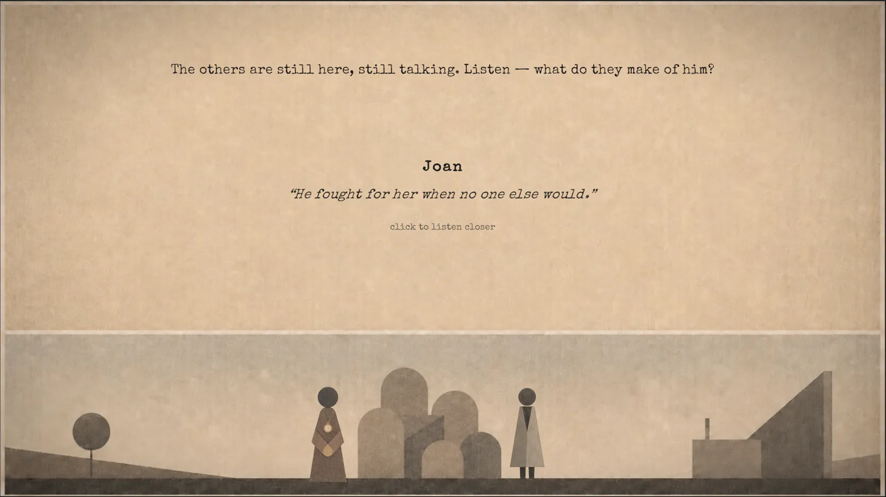
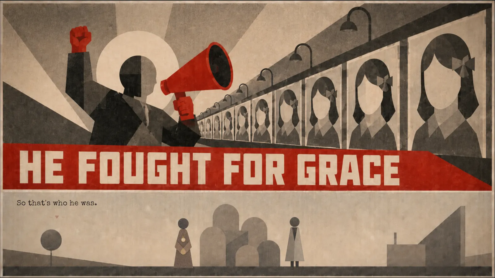
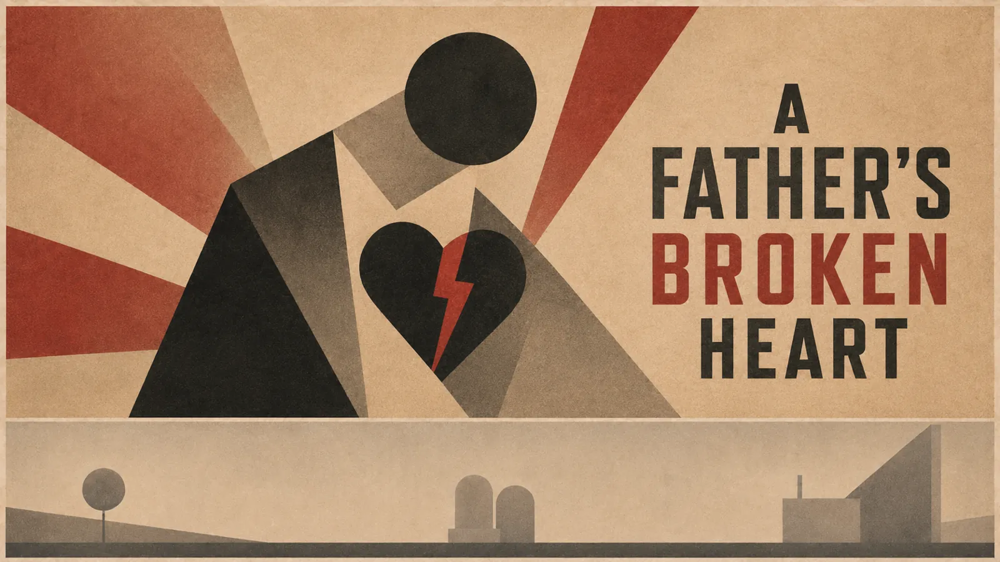
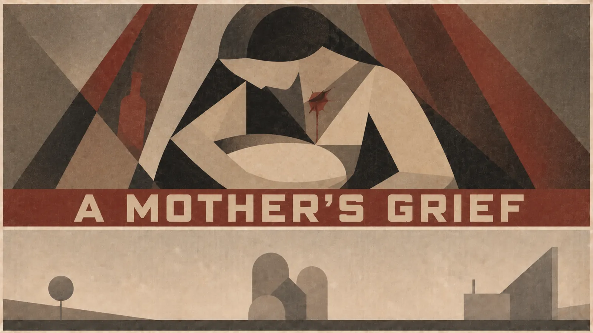
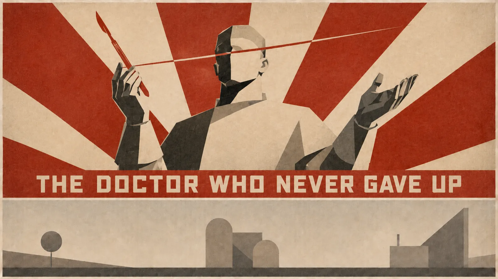
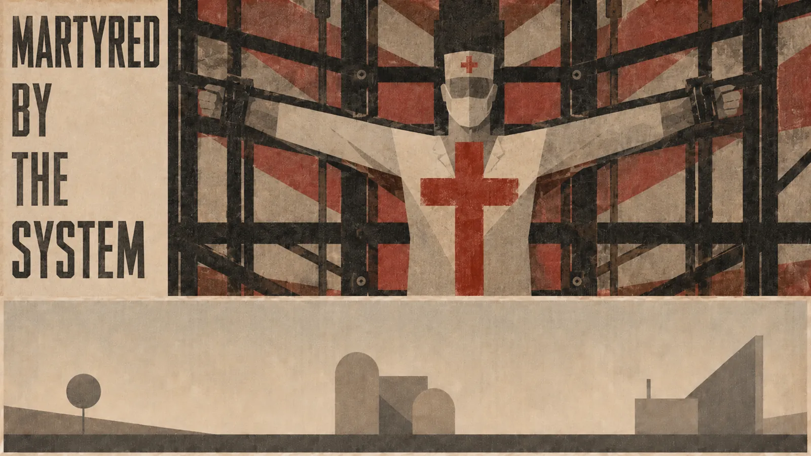
Unity
C#
Narrative design
Serious games
Playtesting
02 · Internship · Huawei02 · 实习 · 华为
DIGITAL TWIN
Digital Engineer Intern (online), Huawei · Summer 2026 · predictive maintenance & a 3D twin platform华为数字化工程师实习（线上）· 2026 夏 · 工业设备预测性维护与数字孪生平台
A predictive-maintenance and digital-twin platform for a fleet of turbofan engines, built end to end on the public NASA C-MAPSS dataset: data pipeline, model training on Huawei Cloud, an inference API and a 3D web dashboard.
为一组涡扇发动机机队搭建的预测性维护与数字孪生平台，基于 NASA C-MAPSS 公开数据集端到端完成：数据流水线、华为云上的模型训练、推理接口，以及 3D 网页大屏。
What I did我做了什么
Remaining-useful-life prediction with a Transformer: RMSE 14.93 ± 0.31 under 5-fold time-series cross-validation, the best of three models compared.用 Transformer 预测剩余寿命：5 折时序交叉验证 RMSE 14.93 ± 0.31，对比的三个模型中最优。
Distributed training on ModelArts: 7.44× speed-up on 8 GPUs (93% efficiency).ModelArts 分布式训练：8 卡加速比 7.44×（效率 93%）。
Led the digital-twin module: a procedurally built turbofan model (under 20k faces) in a Three.js dashboard measured at 60 FPS.主导数字孪生模块：程序化建模的涡扇发动机（2 万面以内），接入 Three.js 大屏，实测 60 FPS。
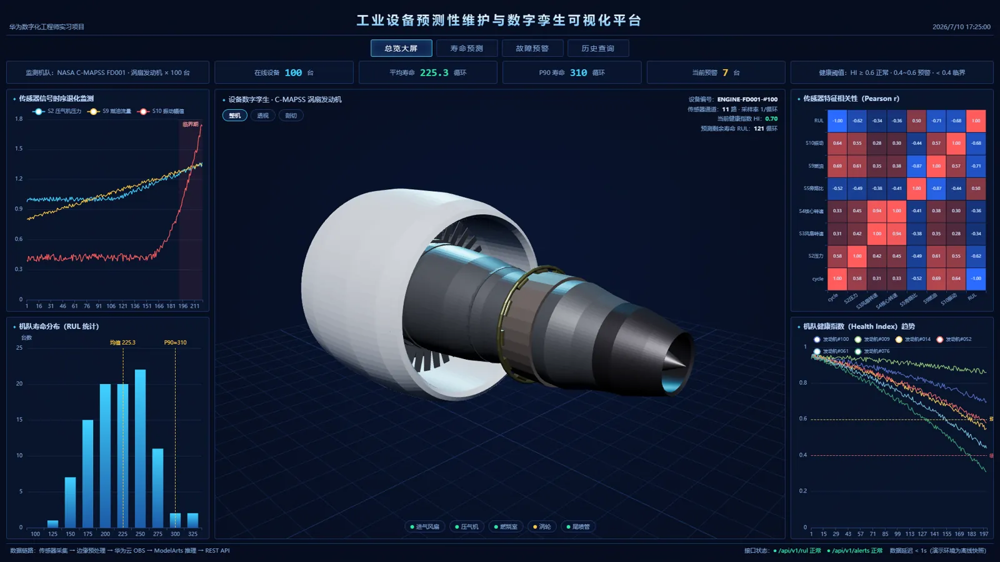
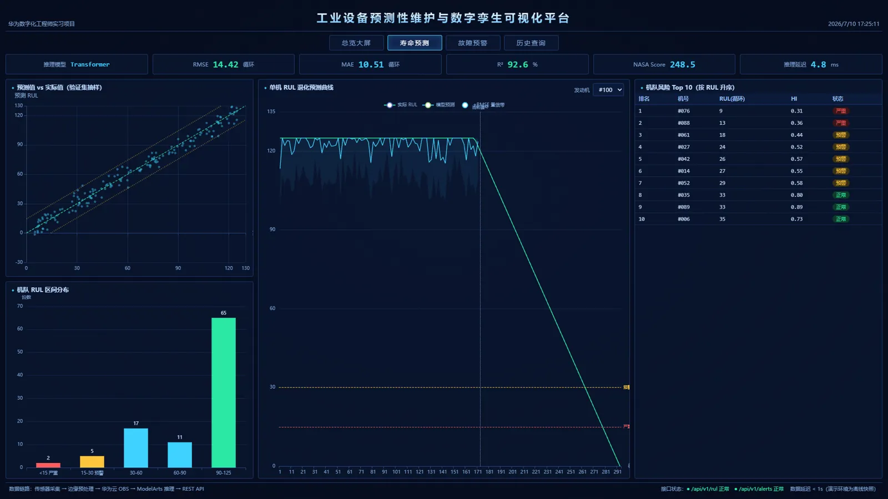
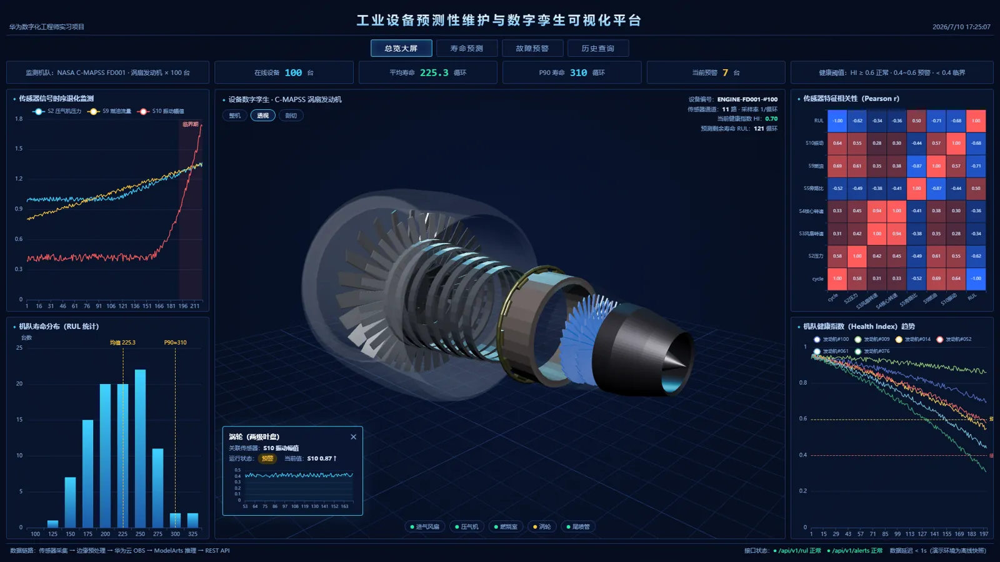
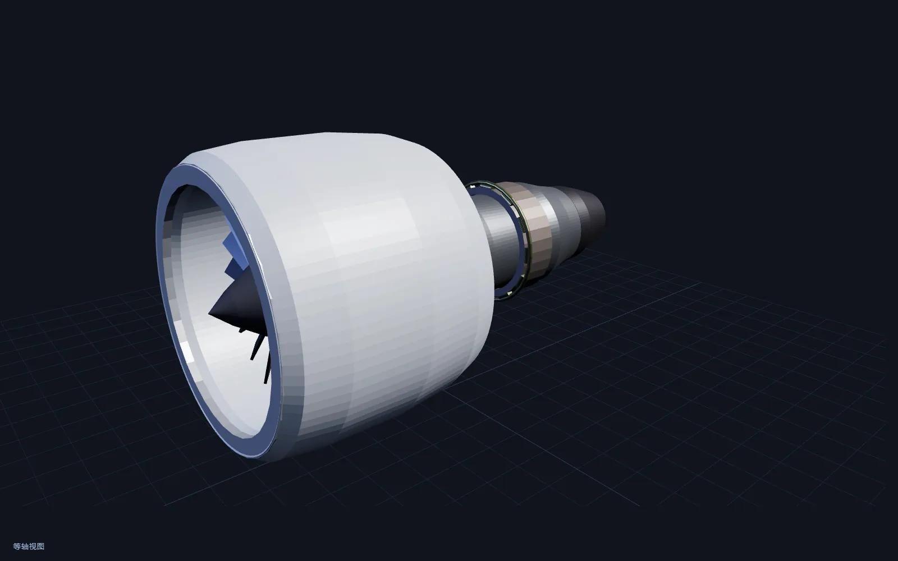
Screenshots are toned to match the page; open one to see the original colours.截图做了双色调处理以统一风格，点开可看原色。
Four C++ projects, solo and team — physics, AI, networking and rendering.四个 C++ 项目，独立与团队——物理、AI、网络同步与渲染。
CSC8503 · 2025.11–12 · Solo独立开发
Real-time Game Prototype实时游戏原型
A 3D prototype in C++ on the NCL framework: package-delivery gameplay, ray-cast and spring-constraint object interaction, enemy AI with state machines, behaviour trees and A* pathfinding, and server-authoritative multiplayer with 20 Hz snapshots and client-side interpolation over ENet/UDP.
基于 C++/NCL 框架的 3D 游戏原型：包裹搬运核心玩法，射线检测加弹簧约束的物体交互，状态机、行为树、A* 寻路的敌人 AI，以及服务器权威联机同步（20Hz 快照广播加客户端插值，ENet/UDP）。
A real-time scene in NCLGL/OpenGL with Cook-Torrance PBR, IBL pre-computation (irradiance map, prefiltered cubemap, BRDF LUT), HDR tone mapping, water with Fresnel reflection and refraction plus spring-damper buoyancy, and a modular post-processing stack.
CSC8507/08 · 2026.01–03 · Team of 4 · architecture & programming4 人团队 · 架构与编程
Team Game Development团队游戏开发
Led the ECS architecture, with a Bridge layer that decouples engine and game logic. Co-designed a JSON- and reflection-driven PrefabFactory for data-driven entities, and set the team's naming conventions and debugging standards.
A C++ simulator for multi-strategy tournaments, noise, evolutionary runs and complexity penalties, with a modular strategy interface and a single CLI that writes text, CSV or JSON.
C++ 迭代囚徒困境模拟器，支持多策略锦标赛、噪声扰动、演化模拟与复杂度惩罚分析；模块化策略接口，统一命令行，可输出 text/CSV/JSON。
I'm Dong Yijun, a game designer and engineer. I completed the MSc in Computer Game Engineering at Newcastle University with Distinction. My dissertation game, Until They Forget, turns a cognitive-bias brief into a narrative in which the player becomes the propagandist, and I'm preparing it for Steam.
I work across C++ engine systems (physics, AI, networking, PBR rendering), data-driven Unity architecture and web 3D, most recently a digital-twin platform during my Huawei internship. I'm interested in games as instruments for reflection, and in the research questions behind them.
我是董一均，游戏设计师与工程师，以 Distinction（优异）成绩完成了纽卡斯尔大学计算机游戏工程硕士学业。毕业设计《Until They Forget》把"认知偏差训练"的命题做成了一部让玩家亲手成为宣传者的叙事游戏，正在筹备上架 Steam。
技术上我横跨 C++ 引擎系统（物理、AI、网络同步、PBR 渲染）、数据驱动的 Unity 架构与 Web 3D，最近一次是华为实习中的数字孪生平台。我关心游戏作为反思工具的可能性，以及它背后的研究问题。
Education教育背景
2025–2026
MSc Computer Game Engineering, Newcastle University — Distinction. Overall average 80.9; dissertation 90.纽卡斯尔大学 · 计算机游戏工程硕士，Distinction（优异）。总均分 80.9，毕业设计 90 分。
Experience经历
Summer 20262026 夏
Digital Engineer Intern (online), Huawei — predictive maintenance and a 3D digital-twin dashboard, built on the public NASA C-MAPSS dataset. See floor 02华为 · 数字化工程师实习（线上）：基于 NASA C-MAPSS 公开数据集的预测性维护与 3D 数字孪生大屏。见 02 层
Skills技能
Game development游戏开发
C++ · Unity / C# · gameplay and narrative systems, state machines玩法与叙事系统、状态机